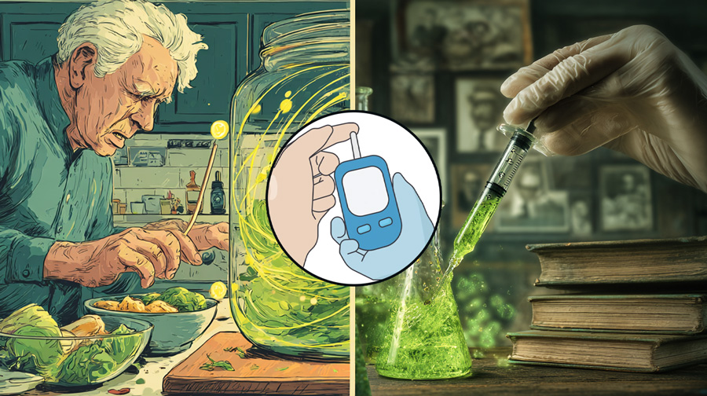

Make It at Home: The Vegetal Mounjaro Recipe to Lower Blood Sugar and Reverse the Symptoms of Type 2 Diabetes
A1C test results of 98% of people are dropping below 5.3% after taking this recipe created by a renowned doctor and TEDx speaker.
Just drink half a glass of this natural beverage — which is being called “Vegetal Mounjaro” — and your blood sugar levels will drop to under 98.
This plant-based discovery is changing the lives of thousands of people who once thought they’d have to live with Type 2 Diabetes for the rest of their lives — and who feared their symptoms would progress to more serious conditions such as blindness, amputation, or even Alzheimer’s.
⚠️ Attention!
What’s being revealed in this video is putting the life of this natural medicine specialist at risk.
So watch this video before it's taken down at any moment — and before you lose the chance to free yourself from this disease that affects more than 2 million people every year in the United States.
Watch Video Now »